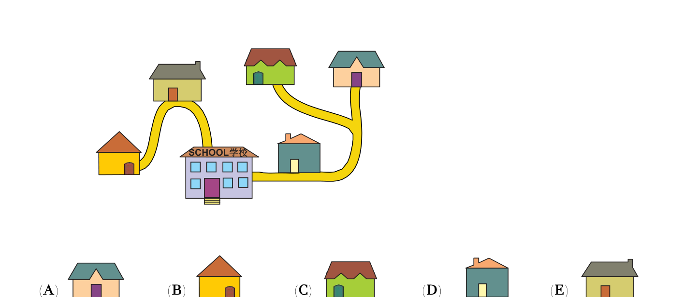

下图展示了五个朋友的家和学校的位置。学校是图中最大的建筑。上学路上 Doris 和 Ali 会经过 Leo 的家，Eva 会经过 Chloe 的家。请问哪一个是 Eva 的家？
The picture shows the five houses of five friends and their school. The school is the largest building. To go to school, Doris and Ali walk past Leo’s house. Eva walks past Chloe’s house. Which is Eva’s house?

实验台：点房子，看小人怎么走到学校
Lab: tap a house — watch the walk to school
1
分别从不同房子出发走走看。找一找：有哪一座房子，会被两条路上的人都路过？那一座就是 Leo 的家。Start from different houses. Find the house that people from two homes both walk past — that is Leo.
2
再看另一条路：谁住得更远、上学要经过谁？更远的是 Eva，被经过的是 Chloe。On the other branch: who is farther and walks past whom? Farther = Eva, the one passed = Chloe.
3
想好后，选出 Eva 的家是 A–E 哪一个。Then pick which option A–E is Eva’s house.
点下面地图里的房子，小人会一步步走向学校；路过的房子会变成橙色。
Tap a house on the map. The walker steps toward school; houses passed turn orange.
学校 SCHOOLSCHOOL
A
点我出发
tap
B
点我出发
tap
C
点我出发
tap
D
点我出发
tap
E
点我出发
tap
🚶
小提示：先多走几趟，数一数「谁被路过了两次」；再去看没有被数到的那一侧。
Tip: walk several routes and see who gets passed twice; then check the other branch.